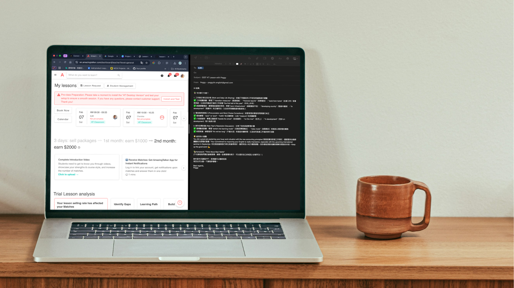

LessonLoop Agent
A custom AI agent designed to automate the post-class feedback loop for online education. Addressing the inefficiency of manual lesson summarization, this tool reduces administrative time by 80% while increasing student personalization
Timeline: Jan 2026 (10 Days)
The Challenge
As an English tutor on AmazingTalker, I found myself spending excessive time manually summarizing lessons and extracting key points for students after every session. This administrative bottleneck limited my time and ability to manage effectively.
The Solution
I built an automated agent that:
- Ingests raw .mp4 and bilingual transcripts.
- Generates a formatted "Student Recap" ready for immediate sending.
How It Works
- The Logic Flow:
1.Input: Video File (.mp4) ➡️ Tool: Whisper Script ➡️ Data: Text File (.txt)
2.Trigger: User Command ("Boot Agent")
3.Brain: Claude reads Data + Rules (Master_Teaching_Guide.md)
4.Output: Perfect Email Draft

Results
The agent reduced my post-lesson workflow from 20 minutes to under 5 minutes per student, allowing me to focus more on planning and less on admin.
Reflection
This project bridged my background in product with my current work in education. It taught me how to identify workflow inefficiencies and rapidly prototype a working AI solution to solve them.